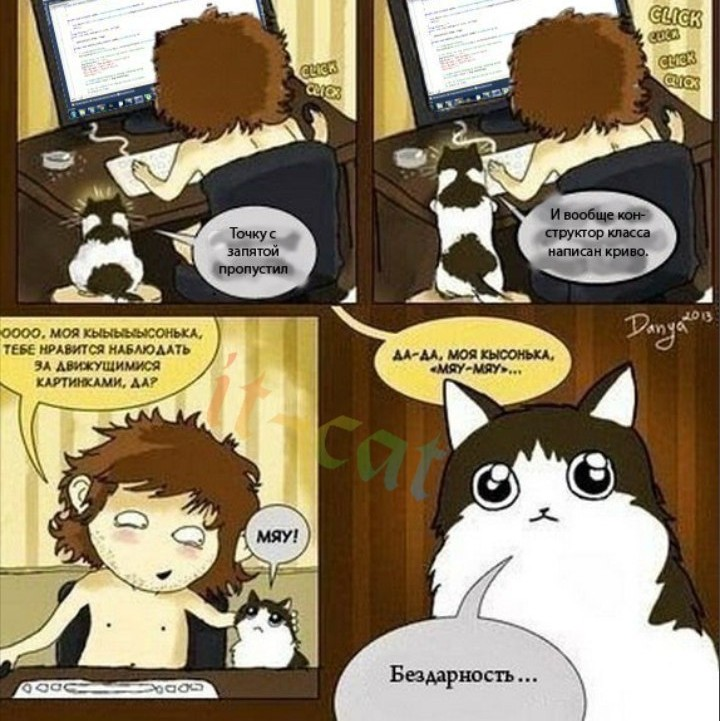
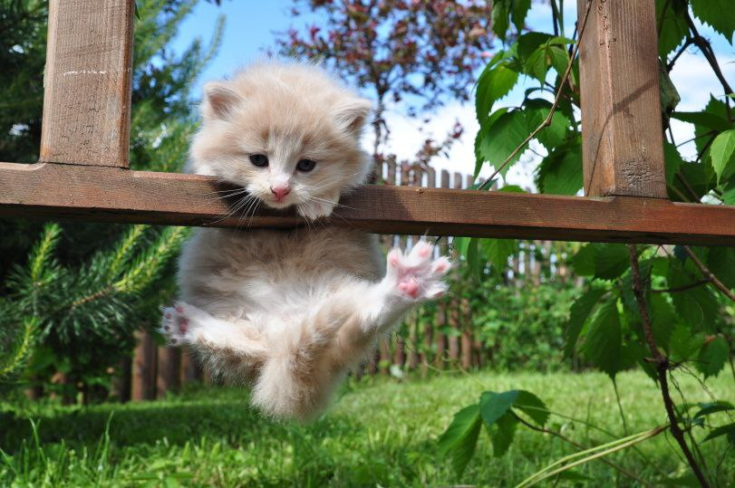

Фритрек и нулевой спринт: Подготовка к работе
</сомнения>

Это было самое начало пути. На этом этапе важно было проникнуться
основами и настроиться на учёбу. И, возможно, подумать, как новые
знания могут повлиять на ваше будущее.
Когда берешься за что-то новое, всегда страшно, что ничего не
получится. Удачи сменяются поражениями и сомнениями, а порой,
кажется, что даже коты умнее тебя. Но если мы будем так просто
опускать руки, то кто будет их кормить?
1 спринт: Я — чистый лист
</концентрация>
На первых этапах мы работали со страхами и сомнениями, которые часто
испытывают новички. Один из них — страх перед чистым листом. Это,
конечно же, намного сложнее, чем боязнь куска бумаги. Часто за этим
ощущением скрываются более глубокие вопросы: с чего начать? а вдруг
будет слишком сложно? что, если я не справлюсь?
Самое сложное в такие моменты, это все таки найти в себе силы не
отвлекаться на простые и более привычные дела и поймать волну. Зато,
если поймаешь, на ней можно далеко уплыть.
1 спринт: А если не получится?
</вызов>
Первый проект — позади! Но это всё ещё самое начало пути. Радость
могла быстро померкнуть и смениться ожиданием провала. Или вы,
наоборот, могли вдохновиться успехами и поверить в себя.
Когда я садился за первый проект, мне казалось, что на этом мой путь
в обучении и закончится. Но стоило приложить немного усилий, как
оказалось, что не все так страшно! То, что в начале пугало, теперь
кажется совсем простым. Сейчас после завершения каждого проекта,
становится интересно, какой же вызов бросит мне обучение дальше?
2 спринт: Погоня за идеалом
</будущее>
На этом этапе вы уже достаточно разбирались в основах вёрстки, чтобы
понять, как много ещё впереди. Вы могли попытаться погнаться за
идеалом и понять, что он недостижим. А, может, вы вовсе и не
подвержены перфекционизму и вместо того, чтобы сделать идеально,
старались просто сделать.
Чем больше я узнаю о верстке, тем больше я понимаю, сколько всего
ещё впереди. А учитывая, как быстро развивается веб - сомневаешься,
сможешь ли угаться. Все же, дорогу осилит идущий.
2 спринт: О тех, кто рядом
</поддержка>

Всё это время вы были не одиноки (хотя, возможно, иногда и
чувствовали, что одни против целого мира). Вас окружали
одногруппники, команда сопровождения и просто близкие люди, которым
можно пожаловаться, если очередной макет просто так не поддавался.
Осваивать что-то новое легче, когда рядом есть единомышленники, не
правда ли?
Тут я просто хочу сказать спасибо всем, кто меня поддерживал,
помогал и проявлял терпение. Без вас бы меня здесь не было.
3 спринт: Обходные стратегии
</подход>
На этом курсе вы постоянно решали разные задачи. В какой-то момент
вам могло показаться, что решения просто иссякли. Значит, пришло
время посмотреть на задачу под другим углом.
Иногда мне кажется, что если задача слишком сложная, то дело не в
ней самой, а в неудачном способе решения. Порой начать заново и
найти новый подход - лучший выбор.
3 спринт: Когда опускаются руки
</время>
Во время учёбы часто возникает чувство, когда не знаешь, за что
хвататься. Вроде и проектную пора сдавать, и задачи хочется
порешать, и в теории получше разобраться, и жизнь не забыть пожить.
В такие моменты очень нужна концентрация. Вспомните, откуда вы её
черпали.
Главное - не ударяться в крайность. Провести время с друзьями или
заняться любимым делом порой полезнее, чем просиживать впустую за
попытками осилить дела на которые нет сил. Но и откладывать все до
последнего плохое решение. Хотя, каюсь, сам грешен...
«Сейчас я здесь»
</предвкушение>
Сейчас вы уже очень много знаете о вёрстке. Но это только начало.
Во-первых, впереди ещё много материала про «красотищу». Во-вторых, с
окончанием курса учёба не заканчивается. Вёрстка — это целый мир. И
этот мир постоянно меняется. Познать его полностью не получится, но
это тот случай, когда важен сам процесс познания. Ведь часто путь —
и есть результат.
Per aspera ad astra